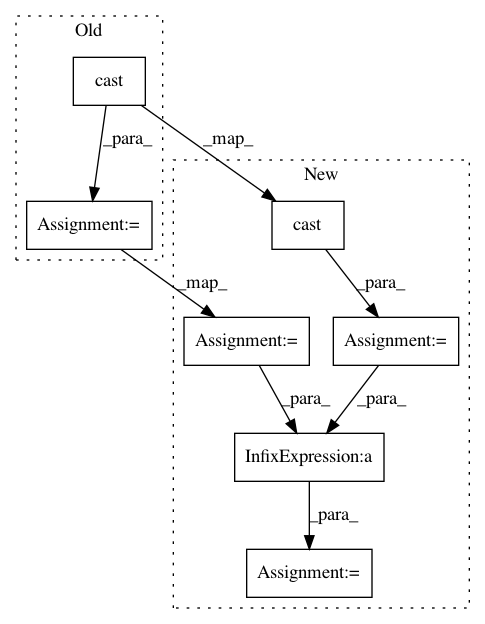

47d5c244706ab01859a3931f66066407a9d5efbb,tensorforce/core/networks/layer.py,Nonlinearity,tf_apply,#Nonlinearity#Any#,148
Before Change
elif self.name == "relu":
x = tf.nn.relu(features=x)
if self.summary_level >= 3: // summary level 3: layer activations
non_zero_pct = (tf.cast(tf.count_nonzero(x), tf.float32) / tf.cast(tf.reduce_prod(tf.shape(x)), tf.float32))
tf.summary.scalar("relu-sparsity", 1.0 - non_zero_pct)
elif self.name == "selu":
// https://arxiv.org/pdf/1706.02515.pdf
alpha = 1.6732632423543772848170429916717
After Change
elif self.name == "relu":
x = tf.nn.relu(features=x)
if "relu" in self.summary_labels:
non_zero = tf.cast(x=tf.count_nonzero(input_tensor=x), dtype=tf.float32)
size = tf.cast(x=tf.reduce_prod(input_tensor=tf.shape(input=x)), dtype=tf.float32)
summary = tf.summary.scalar(name="relu", tensor=(non_zero / size))
self.summaries.append(summary)
elif self.name == "selu":
// https://arxiv.org/pdf/1706.02515.pdf
In pattern: SUPERPATTERN
Frequency: 3
Non-data size: 7
Instances
Project Name: reinforceio/tensorforce
Commit Name: 47d5c244706ab01859a3931f66066407a9d5efbb
Time: 2017-10-14
Author: aok25@cl.cam.ac.uk
File Name: tensorforce/core/networks/layer.py
Class Name: Nonlinearity
Method Name: tf_apply
Project Name: wenwei202/iss-rnns
Commit Name: f9b98760f445fc0219cfc9c4cada2b5f9d35ab1b
Time: 2017-01-24
Author: seominjoon@gmail.com
File Name: basic/model.py
Class Name: Model
Method Name: _build_loss
Project Name: GPflow/GPflow
Commit Name: d57bfbec8e170a6c8517d60b585393b0f3b3c732
Time: 2018-11-05
Author: art.art.v@gmail.com
File Name: gpflow/models/svgp.py
Class Name: SVGP
Method Name: log_likelihood